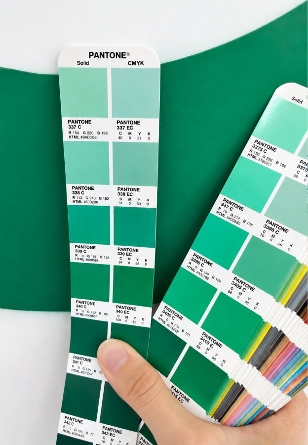
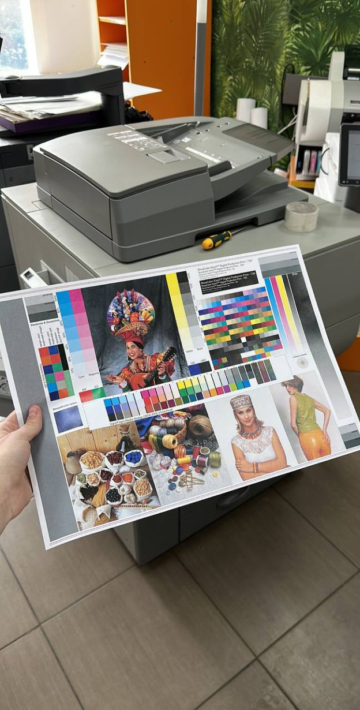
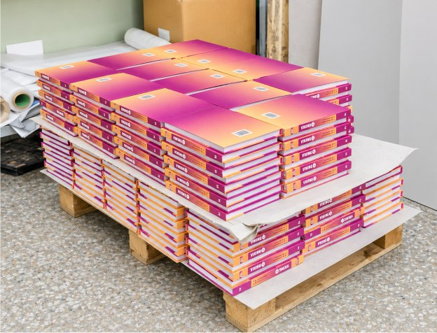
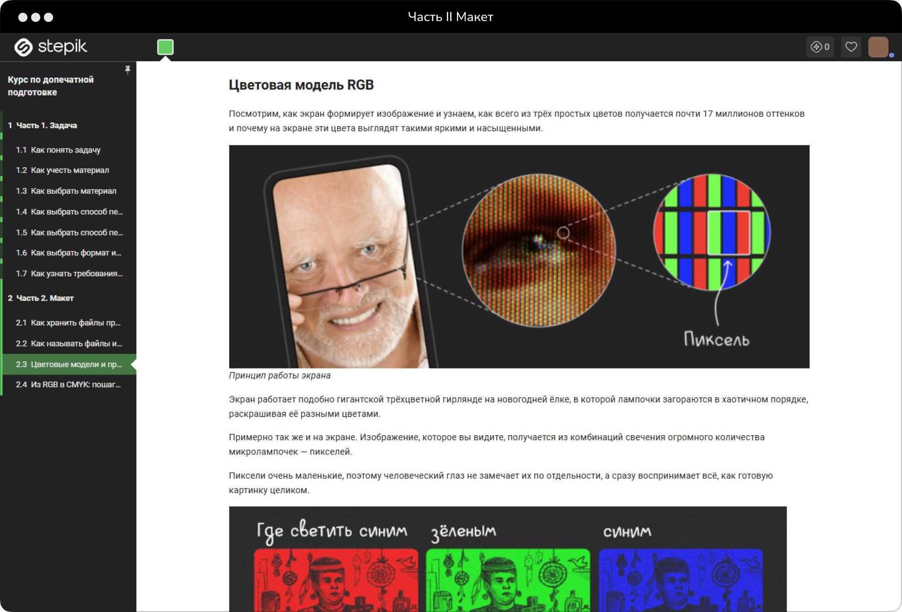
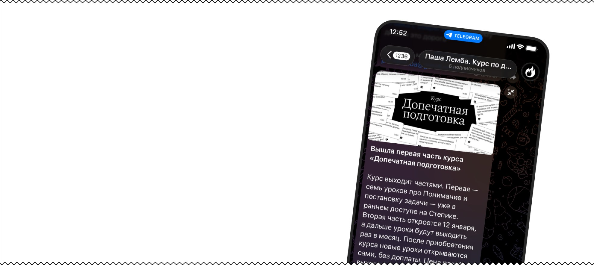

Онлайн-курс для дизайнеров и менеджеров
по работе с печатной продукцией
урс последовательно разбирает весь процесс
работы с печатной продукцией: от постановки технического задания до проверки макета и приёмки тиража.
Наша задача — дать набор универсальных инструментов и приёмов, которые можно применять в любом проекте и под любые требования типографий.
Как понять задачуБесплатно
Задайте вопросы клиенту
Узнайте размеры изделия
Спросите типографию
Запишите понимание задачи
Заведите таблицу макетов
Как учесть материал
Посмотрите образцы
Определите вид материала
Изучите особенности материалов
Как выбрать материал
Пройдите по схеме
Отправьте запрос производству
Согласуйте и запишите
Как выбрать способ печати
на бумаге. Цифра и офсет
Посчитайте печатные листы
Проверьте, есть ли версии
Спросите полный срок
Решите, нужна ли цветопроба
Попросите расчёт в двух вариантах
Как выбрать способ печати
на ткани и пластике
Изучите способы печати
Выберите способ
Как выбрать формат изделия
Узнайте размер в миллиметрах
Проверьте стандартные форматы
Посчитайте, сколько изделий войдёт
на лист
Выберите способ резки
Узнайте, нужна ли раскладка
Как узнать требования типографии
Выберите типографию
Запросите ТТ и расчёт
Проверьте, что в ТТ есть всё
Решите, нужна ли цветопроба
Договоритесь, кто готовит файл
Начните с черновика,
если типографии нет

Как хранить файлы проекта
Подготовьте рабочее пространство
Организуйте систему папок
Как работать над проектом в Фигме
Папка-шаблон
Как называть файлы и версии
Подготовьте рабочее пространство
Организуйте систему папок
Как работать над проектом в Фигме
Папка-шаблон
Цветовые модели и профили
Цветовая модель RGB
Цветовая модель CMYK
Проблема автоперевода из RGB в CMYK
Как перевести
из RGB в CMYK
Сначала запросите требования
Перевод из RGB в CMYK в Фотошопе и Индизайне
В Иллюстраторе
Экспорт макета в PDF для печати
Ручная коррекция цвета в Фотошопе
Проверьте готовый PDF
Как собрать макет
Как сверстать макет
по развёртке
Линии реза и сгиба
Виды конструкций
Источники развёрток
Швы на широких изделиях
Двойная проверка
Ответственность
Как подготовить фото к печати
Как экспортировать файл
в печать
Как проверить макет
перед отправкой
Как показать макет
и собрать правки
Мокап и контекст
Личный показ
Один канал для правок
Проверка файла: шрифты, линки, формат, превью, отправка
Разбор замечаний
Лимит правок
Правки в последний час

Как заказать печать
в типографии
Что собрать до запроса
Что написать в запросе
Что спросить у типографии
Как сравнить предложения
Как организовать цветопробу
Когда нужен образец
Как зафиксировать заказ
Проверьте себя
Как передавать файлы клиенту
и типографии
Настройте общий доступ
Не теряйте материалы
при передаче
Как принять тираж

Курс на Степике: уроки с матчастью, практическими примерами, полезными инструментами и заданиями. Урок «Как понять задачу» открыт для всех.

Для практики понадобятся
графические редакторы
Фотошоп, Иллюстратор,
Индизайн и Фигма.
После покупки доступ
к курсу остаётся навсегда .
Новые уроки, которые выйдут
позже, включены в стоимость.

Рассказываем о курсе, публикуем анонсы,
даём полезные советы по работе с печатью.
Для дизайнеров и менеджеров, которые готовят макеты в печать и отвечают за результат.
Кто берёт курс раньше — платит меньше. По раннему доступу курс стоит 4 500 ₽.
Когда выйдут все 20 уроков, цена станет 22 500 ₽.
Нажмите кнопку «Предзаказ» ниже. Вас переведёт на страницу курса на Степик, где его можно приобрести по сниженной цене. Новые уроки будут появляться внутри курса автоматически.
Напишите автору в Телеграм — ответим и добавим частые вопросы сюда.
Курс
Для дизайнеров, менеджеров и всех, кто работает с печатными проектами
Ранний доступ
Включает доступ ко всем урокам, которые выйдут позже
22 500
4500 ₽
ПредзаказУже доступны
Бесплатный урок о цвете
Предзаказ курса
27 октября
Выход всех уроков
из I Спринта
12 января
Выход всех уроков
из II Спринта
А дальше
Остальные уроки будут
выходить раз в месяц
Тогда почитайте открытый урок или задайте вопрос
авторам в Телеграме: @tuptoppppp.